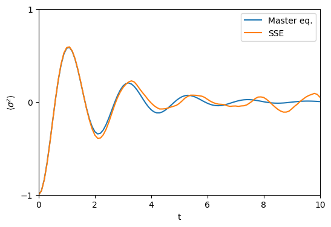

This notebook can be found on github
Two-level atom driven by a noisy laser
In this example, we will show how one can treat phase noise of a laser either with a stochastic Schrödinger equation or a deterministic Master equation.
When a two-level atom is coherently driven by a laser, the laser is often assumed to be perfectly monochromatic. An atom addressed by such a coherent drive is described by the Hamiltonian (in a frame rotating at the laser frequency)
$H = \frac{\Delta}{2}\sigma^z + \eta\left(\sigma^+ + \sigma^-\right),$
where $\Delta$ is the detuning between the laser and the atomic transition frequency. The operators $\sigma^z, \sigma^+, \sigma^-$ are the atomic inversion, raising and lowering operators, respectively.
This model holds for a perfectly monochromatic laser. However, in reality the laser will be subject to some noise which it will imprint on the atom. If the laser is subject to frequency noise, we can add a stochastic term in the Hamiltonian,
$H^s = \frac{1}{2}\left(\Delta + \sqrt{\gamma}\xi(t)\right)\sigma^z + \eta\left(\sigma^+ + \sigma^-\right).$
Here, $\sqrt{\gamma}$ is the strength of the noise and $\xi(t)$ is a white noise term, i.e. $\langle \xi(t)\xi(t')\rangle = \delta(t-t')$.
One can show, that when transforming the Von-Neumann equation with the Hamiltonian $H^s$ into Ito form and averaging over the noise, that the system can be modelled by the Master equation
$\dot{\rho} = i[\rho, H] + \mathcal{L}[\rho]$,
where
$\mathcal{L}[\rho] = \frac{\gamma}{8}\left(2\sigma^z\rho\sigma^z - \left(\sigma^z\right)^2\rho - \rho\left(\sigma^z\right)^2\right) = \frac{\gamma}{2}\left(\sigma^z\rho\sigma^z - \rho\right)$.
In the following, we will show this equivalence numerically, by first solving the stochastic Schrödinger equation with the Hamiltonian $H^s$ a number of times and then averaging. Afterwards we will solve the above master equation and compare the results. First, we load the libraries we need.
using QuantumOpticsusing PyPlotThen, we define the parameters and the basis of a single two-level atom as usual.
# Parametersγ = 2.0η = 1.5Δ = 0.0T = [0:0.1:10;]# Basis and operatorsb1 = SpinBasis(1//2)sm = sigmam(b1)sp = sigmap(b1)sz = sigmaz(b1)Finally, we define the Hamiltonian. Note, that we need to split it into the deterministic and stochastic terms.
# Deterministic part of the HamiltonianH = 0.5Δ*sz + η*(sp + sm)# Stochastic part of the HamiltonianHs = 0.5*sqrt(γ)*sz# Initial stateψ0 = spindown(b1)Now we can calculate the stochastic time evolution using the Schrödinger equation. We define an output function fout that calculates the expectation value we want to plot in the end in order to avoid saving all the resulting states. Then we average over the number of trajectories Ntraj.
Note, that an equation where we simply "add" a noise term has to be interpreted in the Stratonovich sense. This is why we need to switch to another algorithm of the StochasticDiffEq package. We use an adaptive time step method here, so the time step argument dt can be omitted.
# Average over stochastic Schrödinger equationsfout(t, psi) = real(expect(sz, psi))# Import StochasticDiffEq to use different algorithmimport StochasticDiffEqNtraj = 250z_avg = zero(T)for i=1:Ntraj t, z = stochastic.schroedinger(T, ψ0, H, Hs; fout=fout, alg=StochasticDiffEq.RKMil(interpretation=StochasticDiffEq.SciMLBase.AlgorithmInterpretation.Stratonovich)) z_avg .+= z./NtrajendFinally, we calculate the time evolution according to the corresponding master equation defined in the beginning.
# Master equation with dephasingtout, z_master = timeevolution.master(T, ψ0, H, [sz]; rates=[0.25γ], fout=fout)Plotting, we see that both results are in very good agreement. The deviation between the two approaches stems from two sources:
- The result of the master equation would correspond to the average over infinitely many trajectories.
- The default absolute and relative error tolerances of the solver algorithm are
abstol=1e-3andreltol=1e-3, respectively. This causes deviations at longer times which can be reduced by reducing the values ofabstolandreltolsacrificing on the speed of the calculation. For details on step size control, please see the DifferentialEquations.jl documentation here.
figure(figsize=(6, 4))plot(tout, z_master, label="Master eq.")plot(tout, z_avg, label="SSE")axis([0, T[end], -1, 1])yticks([-1, 0, 1])xlabel("t")ylabel(L"\langle\sigma^z\rangle")legend()